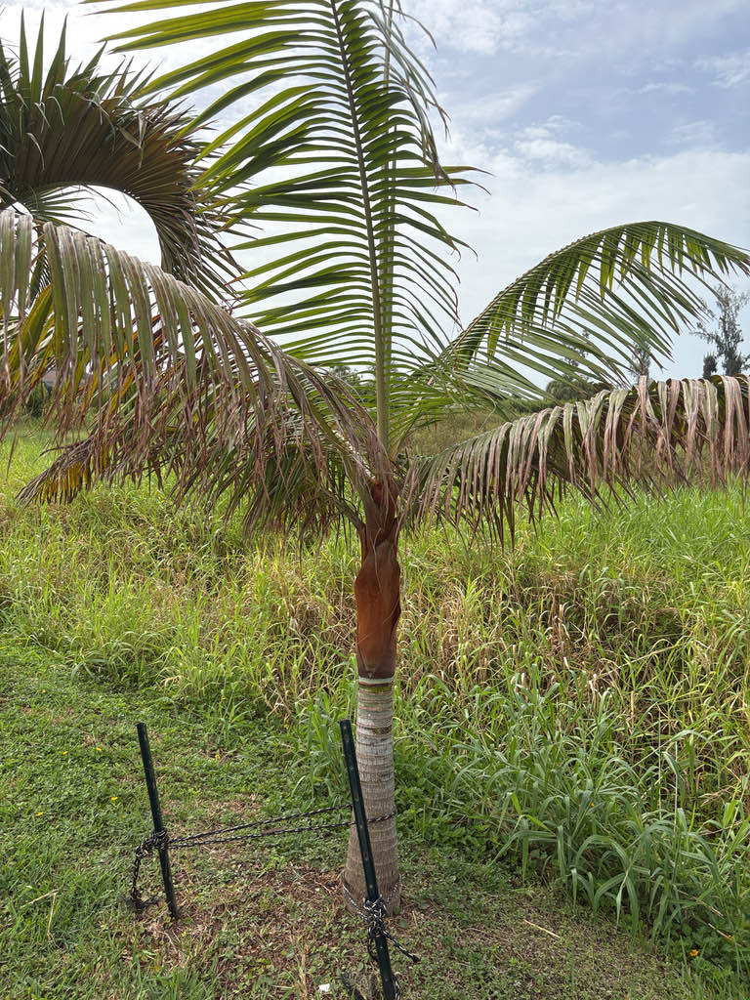

- Only about five mature Teddy Bear Palms are known from the wild. All are confined to a tiny patch of gallery forest in northwestern Madagascar, making this one of the world's rarest palms. The species survives in cultivation far more successfully than it does in its native forest.
- The species was formally described by science in 1995 — from trees already growing in cultivation in Tahiti, not from wild plants. Wild plants in Madagascar were confirmed only afterward.
- The rusty-brown fuzz covering the crownshaft is called tomentum — a dense layer of fine plant hairs produced on the young crownshaft. It gives the palm its teddy-bear appearance and is the easiest way to tell it apart from most other feather palms at a glance.
- The name leptocheilos comes from the Greek for 'thin lip' — a reference to a subtle feature of the flower, not the famously fuzzy crownshaft that everyone actually notices.
The Teddy Bear Palm is native to northwestern Madagascar, where it grows in gallery forest at low elevation — roughly 330 to 490 feet above sea level — in a zone that receives between about 45 and 100 inches of rain per year. Its known wild range is extraordinarily small: surveys have turned up only about five mature individuals, all in a single location in the uplands north of Maevatanana.
The species was described scientifically in 1995 by palm taxonomists Henk Beentje and John Dransfield, but the material they worked from came not from Madagascar but from palms already growing in cultivation in Tahiti. Wild Madagascan plants were only confirmed afterward.
In Florida it is grown as a specialty ornamental, valued for its striking crownshaft and manageable scale. It performs best in Zone 10B and south and is still relatively uncommon in Central Florida gardens, though established specimens handle the climate at Bradenton's latitude well enough.
- The Teddy Bear Palm's signature is instantly readable from across a garden. The crownshaft is blanketed in dense, rusty-brown tomentum — a layer of fine plant hairs produced on the young growth. That fuzz is not a separate organism or surface coating; it is part of the palm itself, and it is what earned the tree its common name.
- Below the crownshaft sits a smooth, nearly white trunk ringed like bamboo with the scars of shed fronds. The combination of pale trunk and rusty collar makes the palm identifiable at a distance in a way that few ornamental palms can match.
- The pinnate leaves arch outward in a slightly upright V-shape along the rachis, with narrow dark green leaflets that droop gracefully toward their tips. Branched flower stalks, roughly three feet long, emerge from directly below the crownshaft and carry small creamy-yellow flowers in late spring and summer.
- The IUCN lists this palm as Critically Endangered in the wild — the highest threat category on the Red List. The wild population is so small that a single event, such as a drought, fire, or an unregulated collecting trip, could eliminate it from nature entirely.
- Wild collecting has been particularly damaging because seed collectors have sometimes felled entire palms to obtain their fruits, meaning a single collecting event can kill one of the very few remaining wild individuals.
- In cultivation the story is almost the reverse. The Teddy Bear Palm is now widely propagated by nurseries across the tropics and subtropics, grown in gardens from Florida and California to Australia and Southeast Asia. The cultivated population is now vastly larger than the known wild population and provides an important ex situ reservoir for the species.
- It belongs to Dypsis, one of Madagascar's major palm lineages — though an ongoing reclassification has moved this palm and many of its relatives into the resurrected genus Chrysalidocarpus. The Teddy Bear Palm's closest look-alike, Dypsis lastelliana, tends to have a thicker trunk and a deeper red crownshaft.
In its native Madagascar the flowers and fruits are part of the local food web, although species-specific wildlife relationships are poorly documented.
The branched inflorescences that emerge below the crownshaft in late spring and summer attract generalist pollinating insects, including bees, when in bloom. Because this is a non-native palm with no shared evolutionary history with Florida's fauna, it does not serve as a larval host for local butterflies or moths.
Visitors seeking the park's best butterfly and pollinator habitat will find it among the native plantings.
Propagation is primarily by seed. The species is monoecious, with male and female flowers borne on the same plant. Seeds are slow to germinate, typically taking two to four months or more under warm, humid conditions.
Creamy yellow, small, and carried on branched inflorescences about three feet long that emerge from directly below the crownshaft. Flowering typically runs from late spring into summer, roughly May through August in Florida cultivation.
Berry-like drupes that ripen from yellow-orange to black. Not considered a food source. In the wild, seeds from these fruits have been harvested — sometimes by cutting the tree down — for the international horticultural trade, which is one of the pressures on the tiny wild population.
Pinnate (feather-shaped), typically eight to ten feet long, with narrow dark green leaflets arranged in a slightly upright V-shape along the rachis. Leaflets droop gracefully toward their tips. A mature crown holds roughly 15 to 20 leaves. Petioles are very short, so the leaves appear to emerge almost directly from the crownshaft.
The trunk is solitary, smooth, and waxy white, prominently ringed with the scars of fallen fronds — and noticeably narrower than many palms of comparable height, typically about eight to ten inches in diameter. The crownshaft sitting atop it is densely covered in reddish-brown tomentum, the layer of fine plant hairs that gives the palm its common name.
The contrast between white trunk and rusty crownshaft is the palm's signature.
The crownshaft is unmistakable — a short cylinder of dense, rusty-brown fuzz sitting at the very top of a clean white trunk. Run your eyes down the trunk and notice the tight, even rings left by fallen fronds; the ringed texture and pale color together make the trunk look almost like a bamboo stem scaled up to palm proportions.
Look for the long arching fronds emerging from that fuzzy collar, and if the palm is in bloom, watch for the three-foot branched flower stalks drooping below the crownshaft. The small dark fruits, when present, signal the end of the flowering cycle.
The fruit is not a food source for people, but it is not toxic — it simply is not eaten. No known toxicity to people, dogs, or cats has been documented for this palm; one commercial seed source explicitly describes it as child and pet friendly. Otherwise harmless.
Dypsis leptocheilos is frequently confused in the nursery trade with its close relative Dypsis lastelliana. D. leptocheilos generally has a longer, fuzzier crownshaft collar and a somewhat sparser crown, while D. lastelliana tends toward a thicker trunk and deeper red coloring. The two are often sold interchangeably, and D.
leptocheilos is sometimes incorrectly labeled 'Redneck Palm,' a name more properly associated with D. lastelliana.
The former botanical name Neodypsis leptocheilos still appears on older nursery tags and in some older references; Dypsis leptocheilos is the name established by Beentje and Dransfield's 1995 revision.
Note that a 2022 molecular study (Eiserhardt et al.) reclassified this palm and many of its relatives under the resurrected genus Chrysalidocarpus, making Chrysalidocarpus leptocheilos the currently accepted name in Kew's Plants of the World Online. Dypsis leptocheilos remains the name in widespread horticultural use.
Collectors may encounter Dypsis leptocheilos x decaryi, a hybrid cross between the Teddy Bear Palm and the Triangle Palm (Dypsis decaryi). Commonly sold as the Teddy Bear Triangle Palm or Red Triangle Palm, it combines the rusty-red tomentum of D. leptocheilos with the three-ranked, tristichous leaf arrangement of D. decaryi.


- © Randall Carter (CC-BY-NC), via iNaturalist